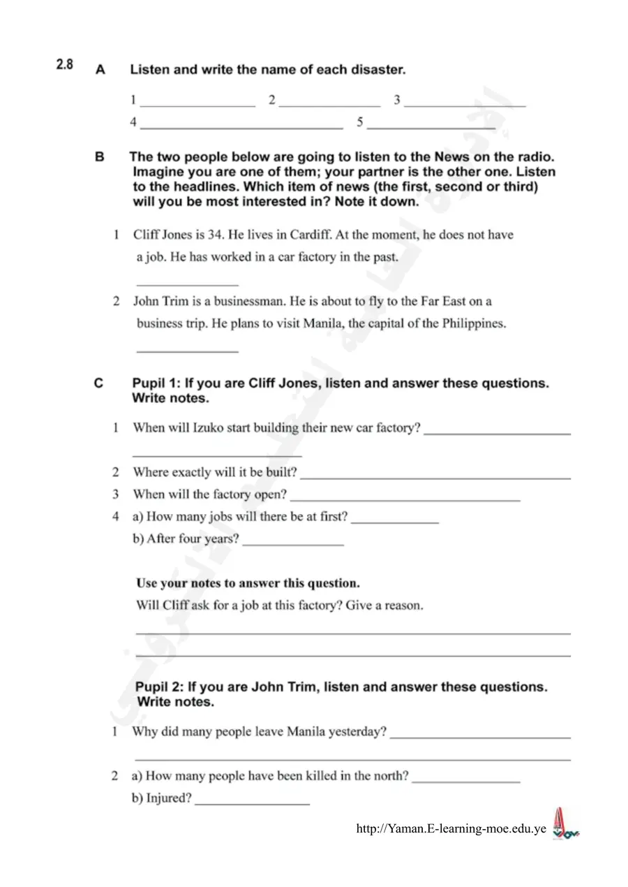

2.8 Listening to the news (Workbook) 2.8 A Listen and write the name of each disaster. 1 ______ 2 ______ 3 ______ 4 ______ 5 ______
B The two people below are going to listen to the News on the radio. Imagine you are one of them; your partner is the other one. Listen to the headlines. Which item of news (the first, second or third) will you be most interested in? Note it down. 1 Cliff Jones is 34. He lives in Cardiff. At the moment, he does not have a job. He has worked in a car factory in the past. 2 John Trim is a businessman. He is about to fly to the Far East on a business trip. He plans to visit Manila, the capital of the Philippines. C Pupil 1: If you are Cliff Jones, listen and answer these questions. Write notes. 1 When will Izuko start building their new car factory? 2 Where exactly will it be built? 3 When will the factory open? 4 a) How many jobs will there be at first? b) After four years? Use your notes to answer this question: Will Cliff ask for a job at this factory? Give a reason. Pupil 2: If you are John Trim, listen and answer these questions. Write notes. 1 Why did many people leave Manila yesterday? 2 a) How many people have been killed in the north? b) Injured?
3 Why do you think that the number of deaths and injuries is so high? 4 How many homes have been destroyed? Use your notes to answer this question: Will John still go to Manila on business? Give a reason. D Listen to the other news item and answer as many questions as you can. Write notes. 1 Where have the remains of the Globe Theatre been found? 2 How far underground are the remains? 3 Which famous person acted in the Globe? 4 When was the theatre built? 5 What destroyed the theatre in 1613? 6 Do we know what shape the theatre was?
[
{
"letter": "1",
"word": "Cliff Jones (Cardiff, unemployed former car-factory worker) — Exercise C Pupil 1",
"ar": "ملف كليف جونز",
"answer": "car-factory"
},
{
"letter": "2",
"word": "John Trim (businessman flying to Manila, Philippines) — Exercise C Pupil 2",
"ar": "ملف جون تريم",
"answer": "manila-disaster"
},
{
"letter": "3",
"word": "Exercise D (the other news item: theatre built & destroyed in 1613)",
"ar": "التمرين الثقافي D",
"answer": "globe-theatre"
}
][
{
"num": 1,
"question": "Why are exact answers to 2.8 A (disasters 1–5), exact dates/numbers in C (Izuko opening date, Cardiff distance, Manila deaths/homes), and D (depth underground of Globe Theatre) left for classroom cassette listening?",
"model_answer": "The official Student/Workbook PDFs contain only the printed questions without the cassette transcript from the Teacher's Book. Notice we can read the printed facts (e.g., Cliff lives in Cardiff, John plans to fly to Manila, Izuko is building a car factory), while exact numeric figures from the broadcast are logged in REVIEW_NEEDED.md rather than invented.",
"explain_ar": "التزاماً بالقاعدة الذهبية 3 و7: لا نخترع أرقام ضحايا أو تواريخ غير مطبوعة في الملفين، وتبقى جميع الأسئلة جاهزة للتطبيق الصفي مع شريط المعلّم."
}
]{
"wb_ocr_vs_image": "قُورنت صفحتا WB ص 21–22 مع tesseract.js eng: أخرجت OCR رقم الدرس '28 A' و'Cc' و'zuko' بدلاً من '2.8 A' و'C' و'Izuko'، وصُحّحت كلها بصرياً عبر wb-022.png وwb-023.png؛ وسُجّل غياب الشريط الصوتي للنشرة الإخبارية في REVIEW_NEEDED.md."
}